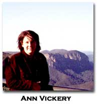

| from
Leaving Lines of Gender: A Feminist Genealogy of Language Writing (forthcoming from Wesleyan/UPNE) by Ann Vickery
Introduction Language Writing as a Practice of Community Against a background of American lyricism devoted to the self, Language writing has been particularly active in deconstructing individualist trends in the cultural production of literature, as well as attempting, in various ways, to rethink community. The very term, Language writing—or Language poetry as it is also called—has been used to identify a group formation of writers as well as the body of poetic writing that they produced during the seventies and eighties. While many have found the tag itself to be limiting, the sharing of a writing practice was generally embraced. In a remark that was typical for many, Joan Retallack states: “My sense of the value of my work must exist in community, must be validated by others whose opinion I respect, must be tied to (perhaps an illusion of) social implication, which I can equate to the implications for the Language and the Literature...feeling that I am part of a project which generates new possibilities.”9 Language writing communities emerged in San Francisco’s Bay Area, Washington, DC, and New York City. Although not all knew or necessarily had met one another, a healthy small-press culture generated a sense of intensity. Owing to generational and aesthetic differences, several writers, such as Kathleen Fraser, Clark Coolidge, and Michael Palmer, were involved in other poetry formations and created an independent space for themselves. Yet their interactions or tensions with Language writing would indelibly shape its subsequent projects. Language writers were concerned not so much with describing the world as with interrogating the possibilities of the social. The public nature of Language writing stands in direct contrast to the privacy of the workshop poem and its therapeutic enabling of the individual. Whereas the workshop poem constructs the poet as self-determining viewer of the world, Language writing emphasizes the existence of “multiple conflicting perspectives.”10 Furthermore, it seeks to understand how relations of power that inform the everyday are disseminated and veiled through language. While some male Language writers focused on the dangers of commodity fetishism, an equal number of women writers took gender as an object of critique. Carla Harryman, for instance, agrees with Shulamith Firestone’s fundamental premise in The Dialectic of Sex: The Case for Feminist Revolution that women’s oppression is linked to sexual difference. Although it matters what form she writes in, what matters more is a commitment to challenging how women are currently valued and positioned in society.11 Much of her poetic game-play and narrative switches displaces conventional sexual roles and their concomitant positions of knowledge and power. Susan Howe argues that in looking at the terrain of poetry we should ask the following questions: “Who polices questions of grammar, parts of speech, connection, and connotation? Whose order is shut inside the structure of a sentence?”12 Language writing undermines interpretative codes by self-consciously playing against ingrained habits of reading. The poem reflects upon itself “not only at the level of represented ideas but prosodically, acoustically, syntactically, visibly; which is to say gives these dimensions equal methodological weight as it gives to more traditional notions of semantic content.”13 At a more general level, Language writing also critiques the boundaries of the poem. It challenges formal distinctions between verse and prose, literature and philosophy, aesthetics and politics. In radicalizing the space of its proper object, it overflows into other genres, like talks, essays, politics, and psychology. Alternatively, other genres may spill into poetry. Co-founded by Eileen Corder, Carla Harryman, and Nick Robinson, The Poets Theater (1978–84) involved many Bay Area Language writers. All three, along with Alan Bernheimer, Bob Perelman, and Kit Robinson would write and take part in plays. Leslie Scalapino would also write and direct plays, while Susan Howe’s own background in the theater is continually brought to bear on her poetry. Another perhaps obvious crossing is between language and music, with Clark Coolidge and Joan Retallack exploring, in quite different ways, the possibilities of sound through complex linguistic, rhythmic, and spatial experimentation.14 By opening up the poetic, Language writers foreground the gap between “what one wants to say...and what one can say.”15 Accordingly, the poem offers up the possibility of collaboration. Rather than simply consuming the text, the reader participates with the writer in its meaning production. However, there is always a danger that the degree of required attention may alienate a reader. In facing this concern, Retallack wonders if:
Yet it is precisely this risk that distinguishes Language writing as a mode of feminist exploration. Indeed, its poetics stands in direct contrast to much of the feminist poetry produced out of the women’s movement. During the seventies, many second-wave feminists sought to bring poetic language closer to common usage in order to “make it more accessible to ordinary women.”17 The poem’s content was privileged as a source for messages that would help build a feeling of collective experience and empowerment. In its combination of the personal and the communal, such poetry would become a vehicle by which many women from African American, Chicana, and Native American backgrounds, as well as lesbian identifications, could at last feel confident enough to express their feelings of difference. Female experiences of motherhood and sexuality were also articulated and affirmed. However, the relation of language to dominant systems of knowledge was not fully recognized as a matter of concern. As Cynthia G. Franklin points out, identity politics and poststructuralism were often placed in opposition to one another.18 Innovative poetry remained isolated and even suspect within many feminist circles, leading Fanny Howe to declare with some frustration:
In order to publish, innovative women writers were forced to start their own presses or journals. Kelsey St. Press became a leading example of this, established by its six editors—Karen Brodine, Patricia Dienstfrey, Kit Duane, Marina La Palma, Laura Moriarty, and Rena Rosenwasser—in order to give the “writing by women we valued a place.”20HOW(ever) (founded by Kathleen Fraser and coedited initially by Beverly Dahlen and Frances Jaffer) provided a more frequent and open forum for innovative poetry by women, as well as offering a space for exchange and critique. Around the same time, Lyn Hejinian founded Tuumba Press, featuring writers such as Fraser, Susan Howe, and Barbara Baracks in the first series. And on the East Coast, Maureen Owen started Telephone magazine after realizing that “a lot of women were around...who were writing seriously, [but who] weren’t getting published anywhere.”21 Alongside the proliferating print culture, Susan Howe began a radio program, Poetry, which brought together her love of innovative poetics and an interest in feminist inquiry. Many of these ventures grounded or ran concurrently with Language writing projects, ensuring a rich cross-fertilization of ideas. Tied to issues of form, many innovative writers found themselves battling the underlying assumption of consensus in sisterhood. Attracted initially to second-wave feminism in the early seventies, Hannah Weiner found her poetic interests increasingly distanced from the “representative” voice espoused by feminism.22 Likewise, Harryette Mullen gained inspiration from white academic feminists but simultaneously discovered her own experiences as an African American marginal to their project. She found in Language writing a way in which to negotiate the complexity of subjectivity and identification, using its opacity and play to develop a “mongrelized” poetics that derails gender and racial boundaries.23Mullen engaged with Language writing in the mid-eighties, just as it began attracting institutional attention. At roughly the same time, mainstream feminism started debating identity politics and difference feminism. Gloria Anzaldúa’s groundbreaking Borderlands/La Frontera: The New Mestiza would not be published until 1987.24 Some critics, such as Charles Altieri, have suggested that Language writing is in danger of becoming another sort of modernist formalism, “blind to historical forces and refusing to take responsibility for the political conditions created by those forces.”25As he discerns, an urgent task is how to address political pressures and hear voices from the margins. While this remains a crucial issue, Language writers have sought to merge an aesthetic practice with a broader cultural awareness. A critique of political structures underscores many of their poetic projects, although these may not take the usual narrative forms. Many women writers have focused on how violent past histories remain a source of loss, shame, and ambivalence—including Leslie Scalapino’s immersion in the media coverage of the Gulf War and Susan Howe’s, Rosmarie Waldrop’s, and Hannah Weiner’s complex and quite different investigations into the relationship between colonial and linguistic power in American history. For many years, Joan Retallack has developed a practice of “poethics,” designed to plumb history’s unintelligible silences. The emergence of Language writing should also be contextualized against the call for civil rights, the women’s movement, the failure of the European intellectual community in 1968, and reactions to the Vietnam War. Such contexts are not discrete but overlapping, because each challenged the intellectual project by questioning its representative capacity as well as the constituency of communities. Tina Darragh states:
Language writing has been in the unusual position of attempting what it knew to be recidivist, that is, naming and performing a shared political practice at the very moment when the modern community is in crisis. As Naomi Schor and others have pointed out, feminism has also been framed as a recidivist project in that it foregrounds a particular form of difference (sexual difference) as a category of analysis.27> This is not to say that feminism elides other forms of difference but that it views them primarily through their relation to gender. The anxiety of feminism, as with the anxiety of Language writing, is to find a politics that enables subjects of difference to work together. Like second-wave feminism, Language writing was demonized politically and became the object of both ridicule and suspicion. Both feminism and Language writing were seen to be conspiratorial, an “infectious outside” that threatened the order of the community at large. In San Francisco in particular, Language writing attracted notoriety. Tom Clark’s article berating Language writing in a 1985 issue of Poetry Flash ran with the headline, “Stalin as Linguist,” its very title projecting an image of Communist monster.28 Charles Bernstein had tried to preempt such thinking in “The Conspiracy of ‘Us’,” but its ironic title only provoked ire.29> Again, when a number of Bay Area writers attempted to argue their relation to one another as an affinity rather than an identity, the force of their argument was defused by having the misrepresentative tag “A Manifesto” subsequently added to their title by the magazine’s editors.30 For both those “inside” Language writing’s boundaries and those who saw themselves as either beyond its scope or marginal to its project, there were feelings of anxiety, alienation, and ambivalence. As Ann Lauterbach declares, “Those not so identified are left out, often understandably embittered or confused, as the idea of an individual iconoclastic poet gives way to collaborative and tribal identities.”31 Recognition of writers through the inflammatory category of “Language poetry” would make it much easier to ignore them as marginal. Throughout the seventies and early eighties, Language writing remained sidelined by arts funding systems, the academy, and a broader reading public. Indeed, the editors of The Morrow Anthology of Younger American Poets (1985), an anthology typical of the era, described the younger American poet as follows: “[H]e is rarely a card-carrying group member, political or aesthetic.”32 > If this is the case, Rae Armantrout argues, then the new American poet is someone with no multicultural, ethnic, class, or gender politics. The image such an anthology projected was of “an oppressive machismo,” the individual standing alone as poetic frontiersman.33> Armantrout wrote of another anthology (19 New American Poets of The Golden Gate) published a year earlier by Harcourt Brace: “[I]t features mostly academic poets, listing all their grants and jobs. It brought home to me how sidelined ‘we’ really are–how far from the centers of power, how apt to be forgotten.”34 Many mainstream feminist poets at the time also suffered from this form of indirect dismissal. Only when writers like Audre Lorde and Alice Walker and, later, Judy Grahn, Minnie Bruce Pratt, and Rita Dove began winning prizes and endorsement from the poetry establishment did this begin to change.As Language writing became anthologized during the mid-eighties, its existence in terms of community was already dissolving. It was becoming institutionally accepted, gaining the support of influential critics such as Marjorie Perloff, Jerome McGann, and Andrew Ross. As the use of the term Language poetry or Language writing gained currency, it, in turn, inevitably began to subsume difference and marginalize other innovative poetries. At the same time, Language writers began to explore other community formations. Some writers took up academic positions; others took on professional roles in publishing, librarianship and communications. Many would turn to family life. In the late eighties and nineties, a proliferation of critical articles and books appeared that focused specifically on Language writing. Most characterized Language writing as a literary movement, complete with leading representatives and manifestoes. By mapping out Language writing through this familiar narrative, critics have duplicated mythologies of genius and hierarchized participation in terms of sexual difference. Even well-known literary histories such as Bob Perelman’s The Marginalization of Poetry (1996) and Michael Davidson’s account in The New Princeton Encyclopedia of Poetry and Poetics (1993) have tended to shift women’s work to the margins—Perelman devoting half a chapter to women Language writers and briefly mentioning them in others, while Davidson names only Hejinian in his summary of its history.35 Anthologies, too, are marked by amnesia as well as already interpreting what they display. “Language” Poetries (1987) showcases only a few “stars” of Language writing, and In the American Tree: Language, Realism, Poetry (1986) was constructed through Silliman’s highly partial reading of Language writing aesthetics.36 Finally, Jerome Rothenberg and Pierre Joris’s massive Poems for the Millennium: The University of California book of Modern and Postmodern Poetry (1998) sets up a complicated alignment of writers under headings such as “Some ‘Language’ Poets.”37 In doing so, it fails to include women writers who threaten genre boundaries in their work, such as Bernadette Mayer, Fanny Howe, and Johanna Drucker. In centralizing poetic formations, Washington DC writers are also effectively elided. In the study of literary movements, the fetishizing of theory has enabled critics to contain innovative poetry and neutralize it along canonical lines. This has certainly been the case with Language writing. Throughout the past two decades, a select number of male Language writers have had their critical work published by eminent university presses. Although their own poetry would sometimes be overshadowed by the authority invested in these volumes, the poetry of their female counterparts remained an object of study through these same theoretical frameworks. Such methodological divisions could only be reductive for Language writers of either gender. The critical reception of Language writing has therefore tended to represent women as secondary participants or its passive benefactors. From an alternative angle, feminist critics have also overlooked their work. In The Feminist Poetry Movement, Kim Whitehead looks more at identity politics than at linguistic subversion in constructing a single feminist poetic tradition.38 This is reinforced from an unlikely quarter in Rachel Blau DuPlessis’s and Ann Snitow’s The Feminist Memoir Project: Voices from Women’s Liberation.39 Although DuPlessis has long been an enthusiastic practitioner and advocate of innovative women’s writing, such voices are absent in this volume’s representation of a single movement in sisterhood. Alternatively, Cynthia Franklin fails to mention the blurred genre work of many Language writers in Writing Women’s Communities: The Politics and Poetics of Contemporary Multi-Genre Anthologies—perhaps assuming a community of sameness rather than of diversity.40 To some degree, this double marginalization is now being reversed. While Language writing is still undervalued in its feminist potential, women’s contributions to Language writing have been increasingly recognized and celebrated in the past few years. Some have referred to this period as the second front of Language writing, although this risks dissolving the radicalism of the alternative narratives now being produced.41 Early books of Bernadette Mayer and Lyn Hejinian have been reprinted—Mayer’s Midwinter Day appearing under the New Directions imprint and Hejinian’s Writing Is an Aid to Memory appearing as part of the Sun & Moon classics series. Wesleyan University Press increasingly supports innovative women’s writing, its list including poets such as Kathleen Fraser, Susan Howe, Joan Retallack, and Leslie Scalapino. The University of California Press is also ensuring a reputation as a publisher of the avant-garde with essay collections by Hejinian and Retallack.42> Furthermore, the University of Alabama has recently published Fraser’s Translating the Unspeakable: Poetry and the Innovative Necessity and will be publishing a collection of papers on women’s small press publishing (a volume emerging out of the “PageMothers” conference organized by Rae Armantrout and Fanny Howe in 1999). 43 Most significant is the recent publication of two anthologies structured around gender. Like the recent Norton anthology on African American literature, Out of Everywhere: Linguistically Innovative Poetry by Women in North America and the UK (1996) and Moving Borders: Three Decades of Innovative Writing by Women (1998) signal a major redress to literary history.44 While Out of Everywhere draws parallels between British and American innovative women’s writing, Moving Borders opens the field within North America. At over seven hundred pages, it gives a detailed mapping of innovative women’s poetry as well as foregrounding the feminist issues through which such poetry is written. Mary Margaret Sloan, notes that in editing the anthology, it was clear how much a work of writing is not the result of a solitary act but the end effect of a multitude of social activities, the most important of which is reading. We read and are read, and that mutual consideration folds us into a conversation which affects everything about us as writers: our aesthetic choices, certainly, but also where we will publish and what kinds of rewards we receive.45 As Sloan suggests, what remains to be done is to contextualize poetry as both text and practice. A genealogy undertakes such a double-barreled process. Leaving Lines of Gender: A Feminist Genealogy of Language Writing offers an alternative to reductive originary narratives, that read Language writing through a few major sources, such as Ron Silliman’s anthology, In the American Tree, and Bruce Andrews and Charles Bernstein’s L=A=N=G=U=A=G=E. Rather than proposing an organic model of growth or a model of equivalence, a genealogy explores the shifting “mess” that encapsulates actual poetic practice through the traces it leaves. It maps out the interweaving, multiple lines of affiliation as well as the debates arising out of difference, whether these be regional, aesthetic, cultural or ideological. As the title suggests, this book explores not only the signs of gender in women’s poetic practice (including practices of publishing, editing, readings, talks, and collaborations), but also how gender’s prescribed tracks have been variously challenged or left behind. Notes (Please note: the end notes for this piece begin with number nine as this paper has been excerpted from a larger work.) 9. (appears as the ninth footnote in the introduction) Joan Retallack, “Intraview,” with Tina Darragh et al., unpublished (1987), 11. (back to text) 10. Charles Bernstein, A Poetics (Cambridge, MA: Harvard UP, 1992), 2. (back to text) 11. Carla Harryman, interview, conducted by Megan Simpson, Contemporary Literature 37.4 (1996): 532. (back to text) 12. Susan Howe, My Emily Dickinson (Berkeley, CA: North Atlantic, 1985), 11. (back to text) 13. Charles Bernstein, Content’s Dream: Essays 1975-1984 (Los Angeles: Sun & Moon, 1986), 370.(back to text) 14. Retallack is currently working on a collaboration composition, And That’s It, an opera in two parts, with Andrew Culver. See http://www.anarchicharmony.org/Opera/andthatsit.html (back to text) 15. Lyn Hejinian, “The Rejection of Closure,” Writing/Talks, ed. Bob Perelman (Carbondale: Southern Illinois UP, 1985), 285. (back to text) 16. Retallack, “Intraview,” 20. (back to text) 17. Kim Whitehead, The Feminist Poetry Movement (Jackson: UP of Mississippi, 1996), xix. (back to text) 18. Cynthia G. Franklin, Writing Women’s Communities: The Politics and Poetics of Contemporary Multi-Genre Anthologies (Madison: U of Wisconsin P, 1997), 14.(back to text) 19. Fanny Howe, rev. of Midwinter Day, by Bernadette Mayer, American Book Review 6 (1984): 16. (back to text) 20. Rena Rosenwasser, “Chain/Kelsey St. Press,” Chain 1 (spring/summer 1994): 92. (back to text) 21. Quoted by Marcella Durand in “Publishing a Community: Women Publishers at the Poetry Project,” paper presented at “Where Lyric Tradition Meets Language Poetry” Conference, 8-10 April 1999, Barnard College, New York. (back to text) 22. Hannah Weiner, interview, conducted by Charles Bernstein, LINEbreak program, 1995. See http://wings.buffalo.edu/epc/linebreak/programs/weiner. (back to text) 23. Harryette Mullen, interview, conducted by Cynthia Hogue, Postmodern Culture 9.2 (1999): n.pag. (back to text) 24. Gloria Anzaldúa, Borderlands/La Frontera: The New Mestiza (San Francisco: Aunt Lute, 1987). (back to text) 25. Charles Altieri, “What is Living and What is Dead in American Postmodernism: Establishing the Contemporaneity of Some American Poetry,” Critical Inquiry 22 (summer 1996): 767. (back to text) 26. Tina Darragh, “Intraview,” with Joan Retallack et al., unpublished (1987), 12. (back to text) 27. Naomi Schor, “Depression in the Nineties,” Bad Objects: Essays Popular and Unpopular (Durham, NC: Duke UP, 1995), 163. (back to text) 28. Tom Clark, “Stalin as Linguist,” Poetry Flash (July 1985); rpt. in Partisan Review 54.2 (1987): 299-304. (back to text) 29. Charles Bernstein’s “The Conspiracy of ‘Us’” was originally part of a dialogue with Michael Lally in L=A=N=G=U=A=G=E 8 (1979); rpt. in Content’s Dream: Essays 1975-1984 (Los Angeles: Sun & Moon 1986): 343-47. (back to text) 30. See Ron Silliman et al., “Aesthetic Tendency and the Politics of Poetry: A Manifesto,” Social Text 19-20 (fall 1988): 261-75. (back to text) 31. Ann Lauterbach, “Misquotations from Reality,” Diacritics 26.3-4 (fall-winter 1996): 152. (back to text) 32. David Bottoms and Dave Smith, eds., The Morrow Anthology of Younger American Poets (New York: Quill, 1985), 19. (back to text) 33. Rae Armantrout, “Mainstream Marginality,” Poetics Journal 6 (1986): 143. (back to text) 34. The anthology in question was 19 New American Poets of the Golden Gate, ed. Philip Dow (San Diego: Harcourt Brace Jovanovich, 1984). (back to text) 35. Michael Davidson, “Language Poetry,” The New Princeton Encyclopedia of Poetry and Poetics, ed. Alex Preminger et al. (Princeton, NJ: Princeton UP, 1993). (back to text) 36. Douglas Messerli, ed. “Language” Poetries (New York: New Directions, 1987); Ron Silliman, ed. In the American Tree: Language, Realism, Poetry (Orono, ME: National Poetry Foundation, 1986). (back to text) 37. Jerome Rothenberg and Pierre Joris, eds. Poems for the Millennium: The University of California Book of Modern and Postmodern Poetry, vol. 2 (Berkeley: U of California P, 1998). (back to text) 38. Whitehead, Feminist Poetry Movement. (back to text) 39. Rachel Blau DuPlessis and Ann Snitow, eds. The Feminist Memoir Project: Voices from Women’s Liberation (New York: Three Rivers, 1998). (back to text) 40. Cynthia G. Franklin, Writing Women’s Communities. (back to text) 41. In a review of Maggie O’Sullivan’s 1996 anthology, Out of Everywhere: Linguistically Innovative Poetry by Women in North America and the UK, and Bob Perelman’s The Marginalization of Poetry, Marjorie Perloff wonders, “Are women language poets coming into their own just when their male counterparts are flagging? Has second-stage language poetry abandoned some of the principles of its New York and San Francisco founding fathers?” As she points out, such questions are not easy to answer. See “The Coming of Age of Language Poetry,” Contemporary Literature 38.3 (fall 1997): 559. In response, I would suggest that what is changing most radically is not the production but the reception of innovative writing. While the work of women Language writers increasingly attracts attention, there is a risk that critical trends of the past will simply be reversed and challenging new volume by male contemporaries elided. (back to text) 42. Lyn Hejinian, The Language of Inquiry (Berkeley: U of California P, forthcoming); Joan Retallack, The Poethical Wager (Berkeley: U of California P, forthcoming). (back to text) 43. Kathleen Fraser, Translating the Unspeakable: Poetry and Innovative Necessity (Tuscaloosa: U of Alabama P, 1999). (back to text) 44. Maggie O’Sullivan, ed., Out of Everywhere: Linguistically Innovative Poetry by Women in North America and the UK (London: Reality Street Editions, 1996); Mary Margaret Sloan, ed., Moving Borders: Three Decades of Innovative Writing by Women (Jersey City, NJ: Talisman, 1998). (back to text) 45. Mary Margaret Sloan, “Unfolding Boundaries: A Talk with Mary Margaret Sloan,” conducted by Robin Tremblay-McGaw, Poetry Flash 278 (September-October 1998): 12. (back to text)
BIO: Ann Vickery is a Research Fellow at Macquarie University in Sydney, Australia. Her book, Leaving Lines of Gender: A Feminist Genealogy of Language Writing, will be published by Wesleyan University Press in December 2000. She is currently investigating constructions of cultural and sexual identity in modern Australian women's poetry.
go to this issue's table of contents
| |||||||||||||||||